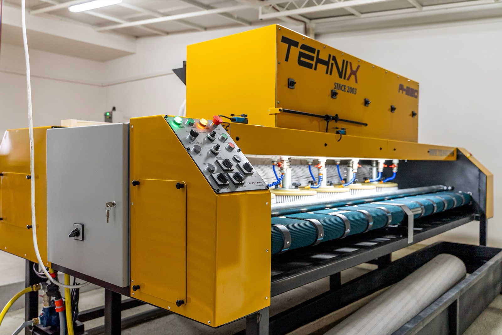
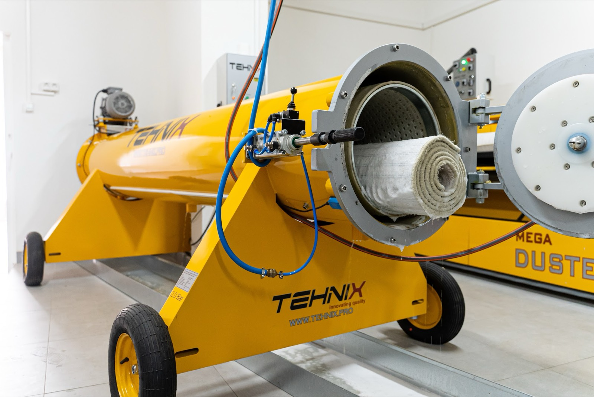
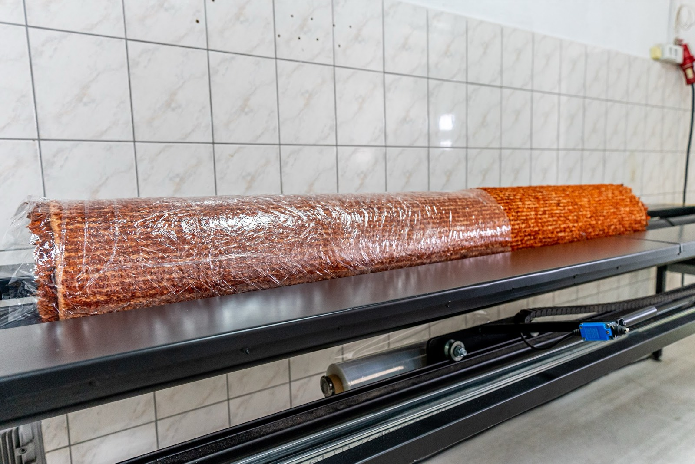
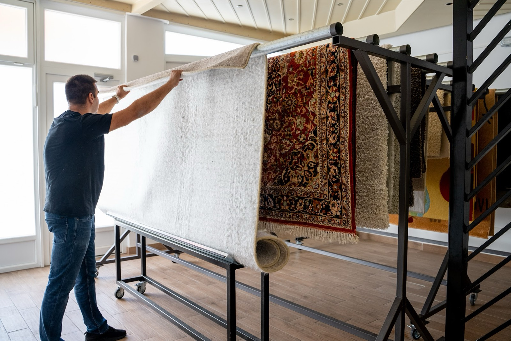

Kako izgleda pranje tepiha u praonici AUTO LINE: šest koraka, strojevi Tehnix i tepih koji vam se vraća zamotan u foliju.

Preuzimanje na adresi
Nazovete ili pošaljete SMS, dogovorimo dan, a mi dođemo po tepih i nakon pranja ga vraćamo. Kombi s natpisom „Strojno pranje tepiha” prepoznat ćete na ulici.
Tepih možete i sami donijeti u praonicu na Put Duilova 2, radnim danom od 8 do 16 sati.
Recenzije: „Dolazak na adresu, pranje i povratak tepiha”
Otprašivanje
Prije vode ide prašina. Tepih prolazi kroz stroj Mega Duster 3000 koji iz njega izbija suhu prašinu, pijesak i sitnu nečistoću iz dubine vlakna.
Tako pranje kreće s čistom osnovom, a voda ne pretvara prašinu u blato.
Tehnix Mega Duster 3000
Strojno pranje četkama
Tepih prolazi ispod niza rotirajućih četki koje ga peru vodom i sredstvom po cijeloj površini, jednako na rubovima kao u sredini.
Četke izvlače dlake kućnih ljubimaca i nečistoću koju usisavač ostavlja.
Tehnix stroj za pranje
Centrifuga
Opran tepih namota se i ide u centrifugu, koja iz njega izvuče što više vode. Kraće sušenje znači svježiji tepih bez mirisa vlage.
Tehnix centrifuga
Sušenje
Tepisi se suše u zatvorenom prostoru praonice, uz industrijski odvlaživač zraka koji ubrzava sušenje bez obzira na vrijeme vani.
Tehnix AD 400 Ultra
Folija i povratak
Suh i iščetkan tepih zamotamo u prozirnu foliju i vraćamo na vašu adresu, u dogovoreno vrijeme. Ostaje vam samo da ga razmotate.
Recenzije: „vraćen u dogovoreno vrime i super miriše”Oprema koju vidite na fotografijama.
Sve fotografije su iz praonice na Put Duilova 2 i objavljene su na Google profilu AUTO LINE Tepih servisa.


Recite nam što perete.
Ispunite nekoliko polja i pripremit ćemo vam SMS s upitom – samo ga pošaljete. Javit ćemo vam se da dogovorimo dolazak po tepih.
091 207 2050Pon – pet, 8 – 16 h · Put Duilova 2, Split